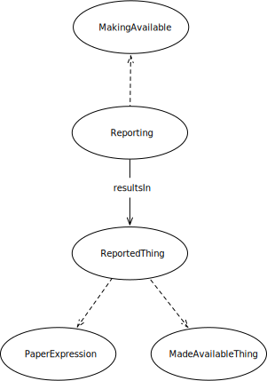

IRI: http://parliament.uk/ontologies/reporting/MadeAvailableThing
IRI: http://parliament.uk/ontologies/reporting/MakingAvailable
IRI: http://parliament.uk/ontologies/reporting/ReportedThing
IRI: http://parliament.uk/ontologies/reporting/Reporting
IRI: http://parliament.uk/ontologies/reporting/resultsIn
This HTML document was obtained by processing the OWL ontology source code through LODE, Live OWL Documentation Environment, developed by Silvio Peroni.